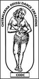

dUra-dRuSTi Cover Page Index Page << Previous Next >> Download duradrusti for Printing or off-line reading Acrobat PDF Format (Approx. 1 MB Size) For the PDF format you would require Adobe Acrobat Reader to view or print the document. Please click the icon below to download the latest Acrobat Reader in case you do not have. Sponsored by:  |